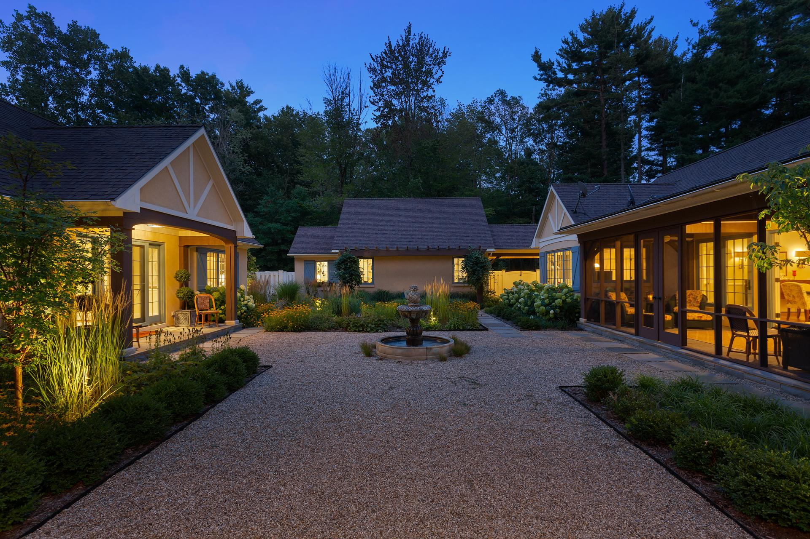
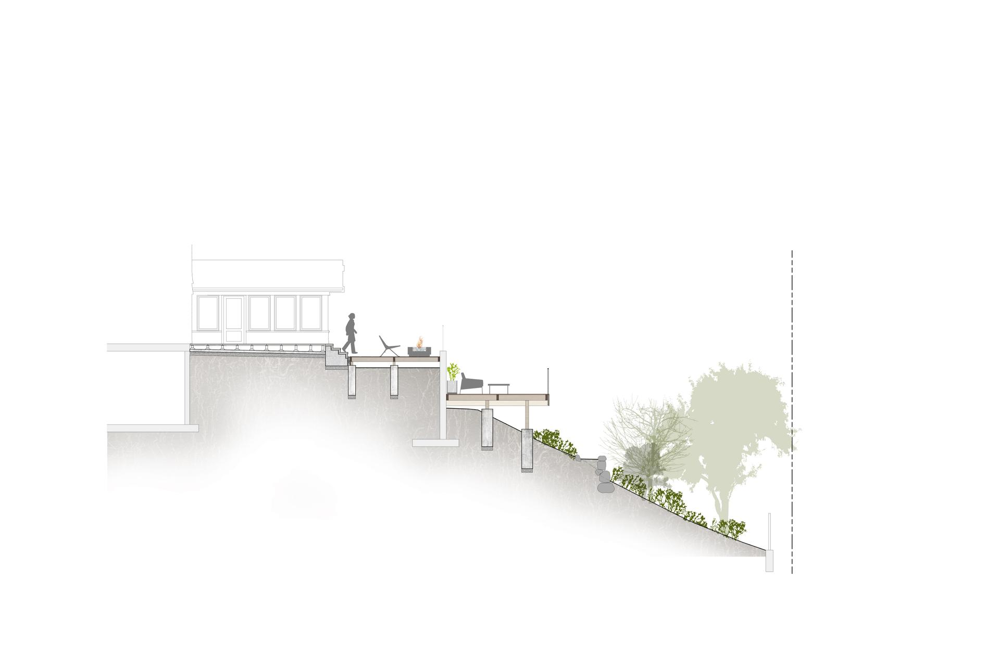
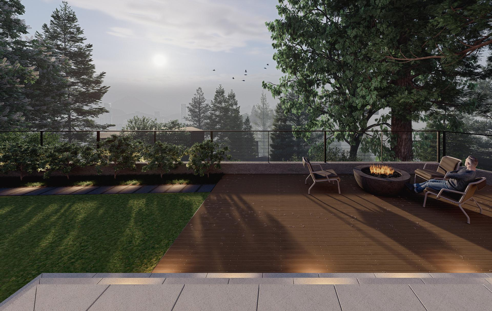

From possibility to place.
DRIFT provides landscape architectural design and planning for private and public environments, working across scales and complexities, from the earliest explorations of a site's potential to the creation of meaningful, lasting places.
What we do.
Across scales.
Drawing on more than two decades of professional experience, DRIFT brings expertise across residential, institutional, civic, and infrastructure projects.



OUR PROCESS
-
01
Listen.
Understand the people, the place, and the ambitions for the project. Identify opportunities, constraints, and priorities.
-
02
Explore.
Investigate possibilities through spatial studies, design concepts, materials, planting, and visualization.
-
03
Refine.
Develop the preferred design, resolving spatial, material, technical, and budget considerations.
-
04
Detail.
Translate the design into drawings and specifications for permitting, pricing, and construction.
-
05
Realize.
Collaborate with owners, consultants, and contractors to help carry the design through construction.
Every project is different.
The appropriate scope depends on the site, project complexity, jurisdiction, and desired level of involvement. DRIFT develops a project-specifi c scope following an initial conversation and review of available site information.
Projects may also require surveyors, arborists, architects, engineers, or other specialists. DRIFT can help identify these needs and coordinate with the broader project team.
FEES
Fees are developed based on
project scale, complexity, schedule and scope of services. Depending
on the project, services may be provided on a fi xed-fee, hourly or
phased basis.